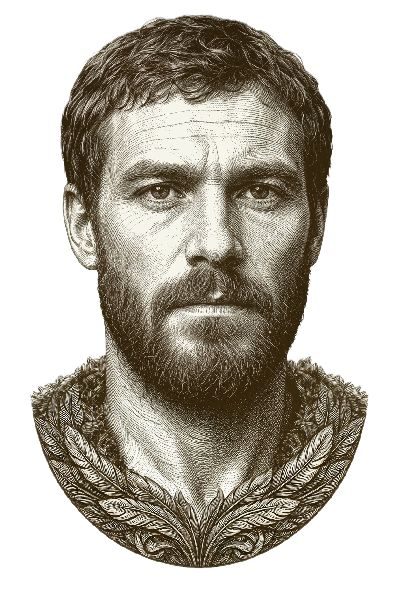
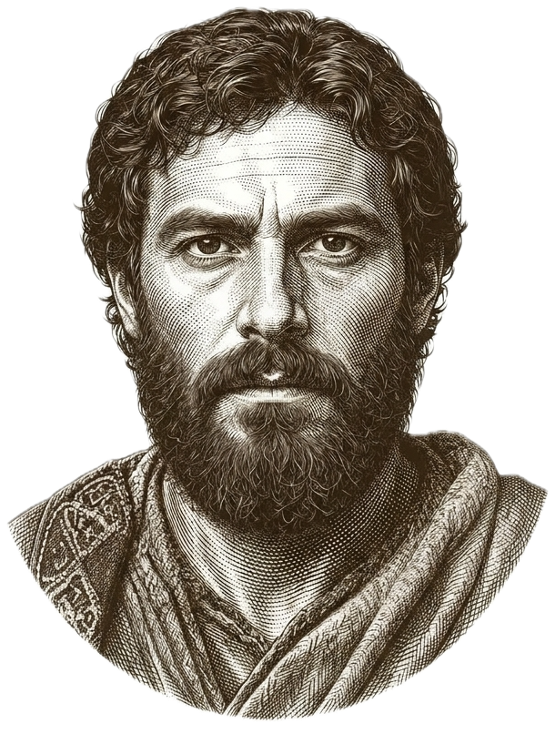
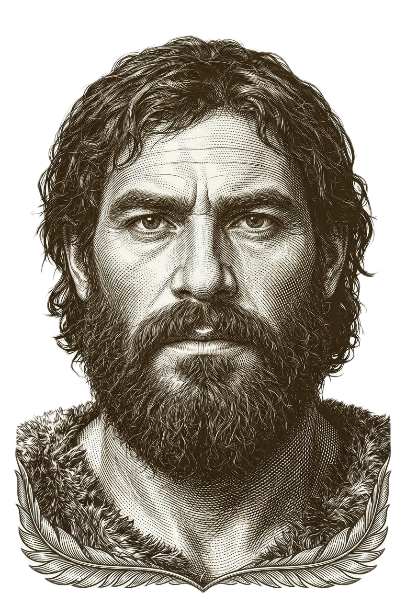
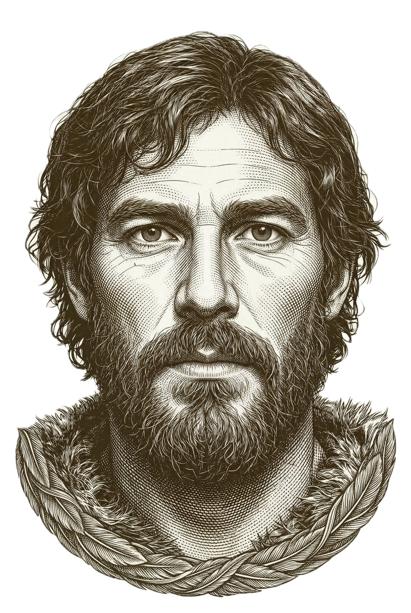
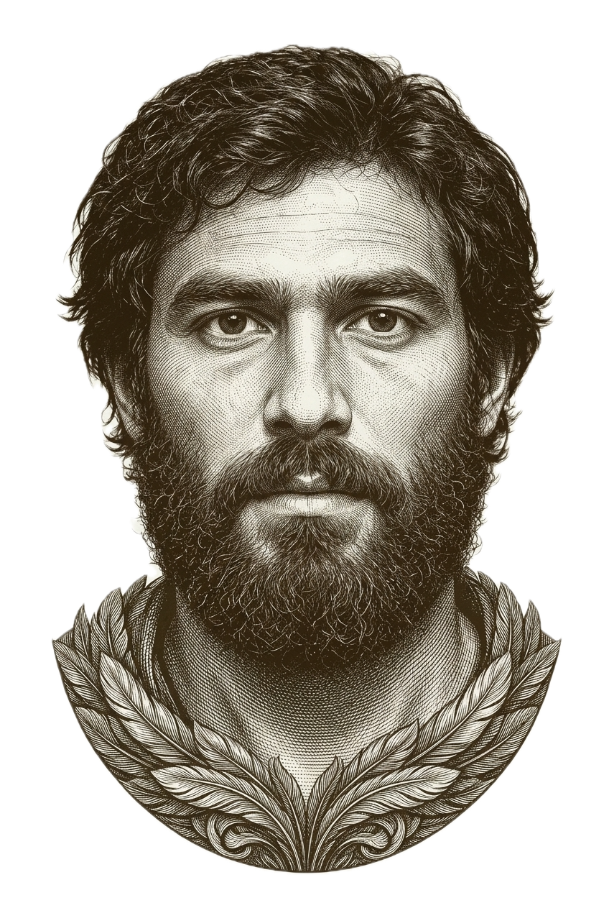
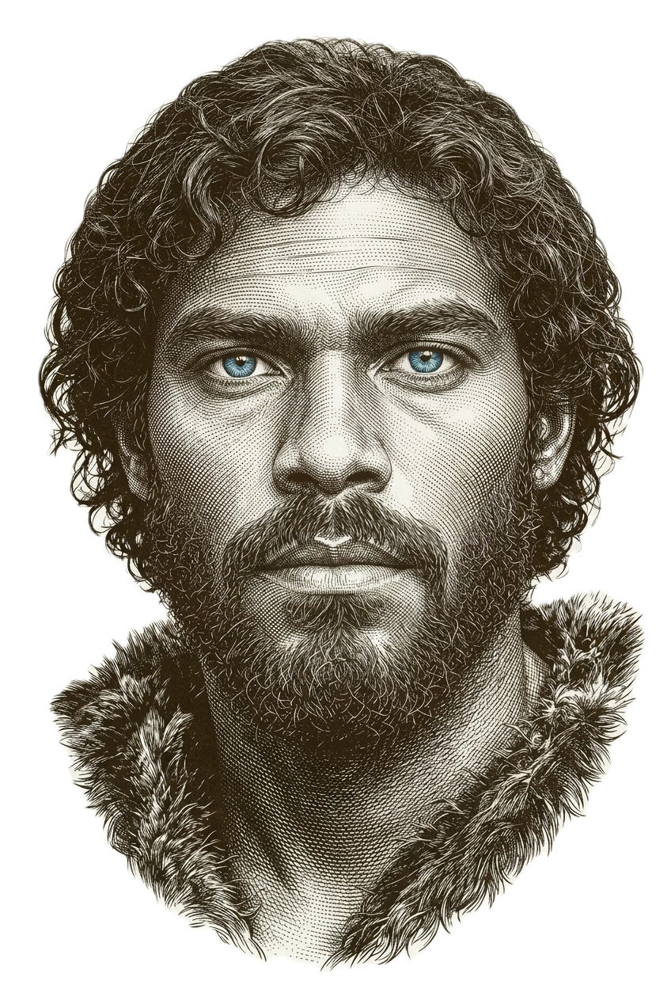
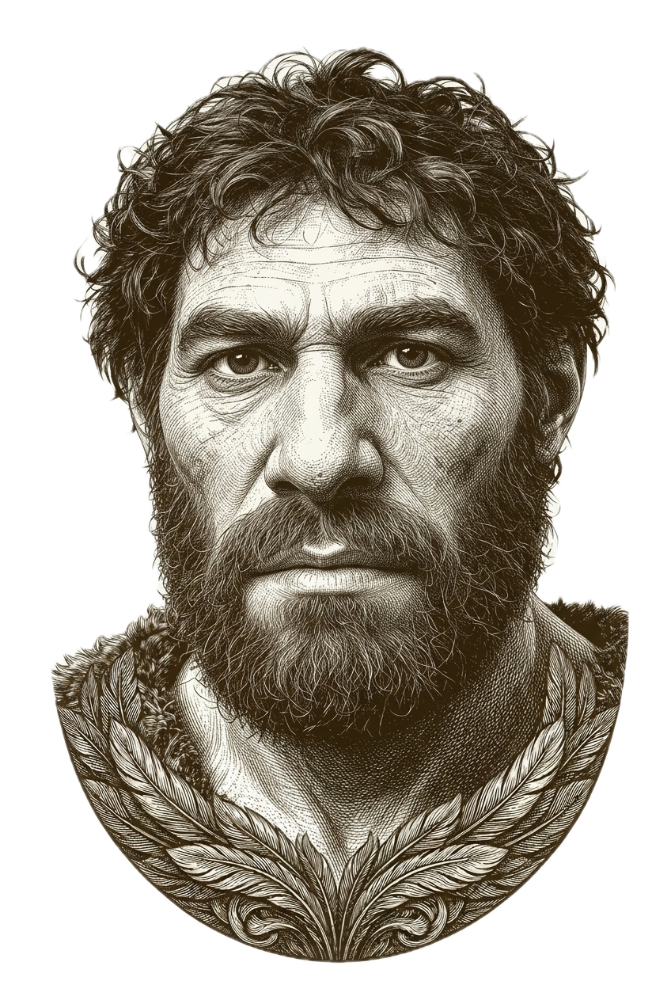

Deep Ancestry Report
Minko Nenov
An Archaeological Excavation of One Genome
Eastern Balkans · Pontic Steppe · Anatolia · 50,000 Years
Executive Summary
 MINKO
MINKONENOV

SLAVICANCESTRY

THRACIANANCESTRY

YAMNAYAANCESTRY

EHGANCESTRY

CHGANCESTRY

WHGANCESTRY

NEANDERTHALANCESTRY
The View From Above
Seven s follow, each a few thousand years deeper than the last. Before descending into them, here is what the whole excavation shows, top to bottom.
The genome sits at the centre of the Eastern Balkan genetic continuum. Modern population comparisons place it closest to Romanian, Bulgarian, and Gagauz references, forming a tight cluster with other Eastern Balkan groups — Montenegrin, Moldovan, Serbian, Macedonian. This matches the MyHeritage picture (Greek and Albanian ~47%, Balkan ~38%) once those two labels are read as overlapping windows onto the same Southeast European gene pool, rather than as separate ancestral fractions.
At the medieval level, the closest ancient matches are Macedonia Medieval (0.030) and Bulgaria Medieval (0.034) — a tight Eastern Balkan pair from the early–high medieval period, consistent with a population shaped by the Slavic migrations while retaining a substantial pre-Slavic Paleo-Balkan substrate. That is consistent with a population shaped by the Slavic migrations of the early Middle Ages while retaining a substantial pre-Slavic Paleo-Balkan substrate. The Bronze Age beneath it shows a near-balanced contribution from Anatolian Neolithic farmers and Pontic Steppe (Yamnaya-related) pastoralists — closer to a 50/50 synthesis than a lean in either direction. Western Hunter-Gatherer ancestry is present but forms the smallest of the three founding European streams, at roughly 15 percent — partly a local contribution, partly carried inside the steppe component itself.
Deeper still, the steppe ancestry appears weighted toward its Caucasus Hunter-Gatherer (CHG) side rather than its Eastern Hunter-Gatherer (EHG) side — a pattern typical of southeastern European profiles rather than the northern Corded Ware route. Single-gene markers confirm a classic European pigmentation profile — light skin, blue eyes — together with lactase persistence from one copy of the European allele. A homozygous East-Asian-associated EDAR variant is present without its usual ABCC11 partner allele, a combination more consistent with an old, indirect route of gene flow than with recent East Asian ancestry.
| Closest match | Distance | |
|---|---|---|
| Modern population | Romanian | 0.018 |
| Medieval | Macedonia / Bulgaria Medieval | 0.030 / 0.034 |
| Bronze Age | Yamnaya / Anatolian Neolithic — tied | 0.171 / 0.173 |
| Archaic steppe layer | CHG vs. EHG | 0.253 / 0.286 |
Sibling note: Compared with Stayko, this profile sits slightly farther from the southern, Aegean end of the Balkan continuum and closer to the Romanian–Bulgarian core.
Takeaway: Eastern Balkan profile — balanced farmers + steppe, then Slavic-era shaping into a medieval Bulgarian-like population.
Everything that follows — seven layers, eight thousand years — is the evidence behind that one sentence.
Genetic Stratigraphy
Populations and ancient reference samples used to interpret this profile.
Top = today, bottom = deepest past. The coloured column is this report’s narrative order, not exact start/end dates on a calendar. Where WHG, EHG, and CHG overlap in time, the main column shows one neutral stretch; their true spans are in the thin lanes beside it.
The Surface
What the Labels Are Telling Us — and What They Are Not
An excavation has to start somewhere. This one starts at the surface, with the labels a standard DNA test hands you — and with why those labels are the least reliable part of the whole report.
MyHeritage's ethnicity estimate for this kit reads as follows:
| Greek and Albanian | 46.8% |
| Балкански(Bosnia and Herzegovina) | 38.4% |
| East European | 8.8% |
| South Italian | 4.9% |
| Baltic | 1.1% |
MyHeritage also flags four Additional Genetic Groups detected at lower confidence — finer-grained population signals the main breakdown doesn't have room for: Bulgaria, Romania, and Bosnia and Herzegovina.
Every ancestry report begins with percentages and place names. The MyHeritage results read: Greek and Albanian 46.8%, Balkan 38.4%, East European 8.8%, South Italian 4.9%, Baltic 1.1%. A natural reading suggests a person who is part Greek, part Balkan, part East European — as though different ancestral populations contributed separate, countable slices. That reading is incorrect, and correcting it is where the real story begins.
These percentages are not ancestry fractions in the way a family tree would show them. They are the output of an algorithm comparing your DNA against modern reference populations and asking which living groups you most resemble, and in what proportions. The same genome run through a different algorithm with a different reference panel will produce different percentages — as the multiple GEDmatch calculators in this report demonstrate repeatedly. What matters is not the precise percentage from any single tool, but what is consistent across all of them.
Greek and Albanian (46.8%) does not mean you have a Greek or Albanian grandparent. It means approximately half your genetic profile most closely resembles those modern reference populations, which are themselves descendants of the same ancient Aegean, Anatolian Neolithic, and Paleo-Balkan substrate that underlies all of southeastern Europe — the same substrate that also produced the ancient Thracians, Dacians, and Illyrians of the pre-Slavic Balkans. Modern Greeks and Albanians carry a high proportion of Early European Farmer ancestry and relatively less of the Slavic migration signal, making them the closest living proxies for the pre-Slavic Paleo-Balkan layer. When the algorithm encounters the strong Mediterranean and Anatolian Farmer component in this genome, it maps it to Greek and Albanian — not because of Greek or Albanian ancestry in any genealogical sense, but because those populations best preserve the ancient shared substrate that predates all modern Balkan national identities.
Balkan (38.4%) captures your Slavic migration-era ancestry and the local Paleo-Balkan substrate — the populations already in the Balkans before the 6th-century Slavic expansions, plus the migrants themselves. The near-equal split between Greek/Albanian and Balkan is the mathematical expression of your position at the Eastern Balkan genetic crossroads, where the Mediterranean farming bedrock and the continental Slavic layer are present in approximately equal measure.
South Italian (4.9%) is not Italian ancestry in any genealogical sense. Modern southern Italians and Balkan Greeks share large amounts of Anatolian Neolithic Farmer and Roman-era Eastern Mediterranean ancestry. This percentage is a mathematical reflection of the shared pre-Roman Mediterranean genetic substrate that once connected the entire central Mediterranean basin — the same ancient farming signal expressed through a different modern population label.
East European (8.8%) is the northern Slavic overshoot — the Baltic and forest-zone signal carried from the Slavic homeland in the Pripyat marshes, not a separate East European ancestor. Baltic (1.1%) and the additional clusters noted by MyHeritage — Bulgaria, Romania, Serbia/Croatia/Bosnia — are the algorithm recognising that your genome sits at the precise centre of the Eastern Balkan genetic continuum, simultaneously resembling all neighbouring points on the same continuous landscape.
Takeaway: The label is not the finding — country names are modern reference tags, not a family tree.
Living
Populations
The Living Population Map — Where Your Genome Sits Today
When your DNA coordinates are compared against modern population averages in the Global25 framework, the results form a geographically precise gradient. The closest modern match is Romanian at distance 0.018, followed immediately by Bulgarian at 0.021, Gagauz at 0.024, Montenegrin at 0.025, Moldovan at 0.025, Serbian at 0.026, and Macedonian at 0.026. Every population in the top seven sits below 0.027 — the threshold that represents a genuine, direct regional match. Greek Central Macedonia appears at 0.040 and Albanian at 0.042, already perceptibly more distant as the Mediterranean component begins to pull away from the Slavic migration signal.
The distances form a perfect geographic gradient: closest matches are all in the Eastern Balkans, the fit degrades systematically as you move either south toward the Mediterranean core or north toward the Slavic forest-steppe. Your genome does not sit near one modern population — it sits at the centre of a genetic continuum spanning the entire Eastern Balkan corridor from Moldova to Macedonia.
Romanian edges Bulgarian by a narrow margin — 0.018 versus 0.021 — a gap well within the resolution of modelled coordinates. What this tells us is not that you are Romanian rather than Bulgarian, but that you occupy the precise genetic midpoint between these two populations, which are themselves among the most genetically similar national groups in Europe. The GEDmatch single-population oracles across multiple calculators confirm this: Romanian and Bulgarian rank first and second interchangeably depending on which calculator is used, with Macedonian and Serbian always nearby. The relative distance to Greek Central Macedonia (0.040) and Albanian (0.042) — both significantly further than all northern Balkan populations — is the quantitative marker of your stronger Slavic and Romanian-corridor pull compared to the more southerly and Aegean-oriented profile of populations further down the peninsula.
| Modern Population | G25 Distance | |
|---|---|---|
| Romanian | 0.018 | |
| Bulgarian | 0.021 | |
| Gagauz | 0.024 | |
| Montenegrin | 0.025 | |
| Moldovan | 0.025 | |
| Serbian | 0.026 | |
| Macedonian | 0.026 | |
| Greek Central Macedonia | 0.040 | |
| Albanian | 0.042 |
MyHeritage Ethnicity Estimates
| Greek and Albanian | 46.8% |
| Balkan | 38.4% |
| East European | 8.8% |
| South Italian | 4.9% |
| Baltic | 1.1% |
Eurogenes K36 — Top Components
| East Balkan | 14.55% |
| Italian | 10.46% |
| East Med | 9.68% |
| Fennoscandian | 8.80% |
| East Central Euro | 8.55% |
| Central Euro | 7.72% |
| Iberian | 7.23% |
| North Atlantic | 5.45% |
| North Caucasian | 5.12% |
| Armenian | 4.86% |
Takeaway: You sit in the Eastern Balkan cluster (Romania–Bulgaria core), not in one single “national” box.
Medieval
500–1200 AD
The Medieval Stratum — Bulgaria in Deep Time
The modern population labels tell us where you sit today. To understand how that Balkan component formed, we need to remove the modern layer and descend into the medieval period.
Beneath the modern population layer lies the first historical stratum: the medieval populations that directly preceded the communities your genome most resembles. On the consensus G25 coordinate, the closest medieval references are Macedonia Medieval (0.030) and Bulgaria Medieval (0.034). Both are real ancient DNA averages from the Eastern Balkans in the medieval period — not theoretical labels. Bulgaria Medieval remains an excellent match and is still closer than almost all other ancients tested; it is simply not the single nearest row in this list.
Distances of ~0.03 mean the modelled coordinate sits close to those medieval Balkan averages in genetic space. That does not by itself prove unbroken residence in one town for twelve centuries. It does show that your profile is more consistent with early–high medieval Eastern Balkan variation than with more distant ancient or modern groups further afield.
The medieval distance table reveals additional structure. Russia Viking SG at 0.076 reflects the shared northern European steppe-derived ancestry — Varangian merchants and mercenaries were active throughout the Byzantine and Bulgarian world, and the genetic distance here reflects common ancestry rather than direct Norse contact. A second Viking-era reference individual, Russia Viking o SG, ranks at 0.097 — the _o suffix denoting an outlier individual with atypical admixture. Hungary Late Avar at 0.122 versus Hungary Early Avar at 0.214 is a gap worth examining carefully.
The Avar Khaganate controlled the Pannonian Basin — modern Hungary — from 567 to 895 AD, precisely during and after the Slavic migrations into the Balkans. Early Avars (6th–7th century) carried substantial East Asian steppe ancestry — they were genetically distant from Balkan populations. Late Avars (7th–9th century) were already heavily admixed with local European populations, producing a composite that sits much closer to the Eastern Balkan profile. The gap between Early Avar (0.214) and Late Avar (0.122) is the genetic record of that absorption process.
The elite Avar burials sharpen this picture further. Hungary Late Avar Elite sits at distance 0.301 and Hungary Early Avar Elite at 0.414 — both dramatically more distant than the general Avar population. Elite Avar burials are archaeologically and genomically associated with the ruling steppe dynasty, which retained a much higher proportion of East Asian ancestry than the general population they governed. The fact that the elite are distant while the general Late Avar population (0.122) is close is a precise genomic confirmation: what is genetically proximate to this profile is not the East Asian ruling class of the Avar Khaganate, but the already-Europeanised mixed substrate of the general Late Avar population — the people who were being absorbed into the Slavic migrations as they moved southward through the Pannonian corridor into the Balkans.
| Medieval Population | Distance | |
|---|---|---|
| Bulgaria Medieval | 0.034 | |
| Russia Viking SG | 0.076 | |
| Russia Viking o SG | 0.097 | |
| Hungary Late Avar | 0.122 | |
| Serbia Medieval Gepidian | 0.136 | |
| Hungary Early Avar | 0.214 | |
| Hungary Late Avar Elite | 0.301 | |
| Hungary Early Avar Elite | 0.414 |
Takeaway: Closest medieval matches are Eastern Balkan (Macedonia ~0.030, Bulgaria ~0.034) — older Balkan base plus early-medieval mixing, not a pure single tribe.
An extended ancient DNA comparison against the full Bulgarian archaeological record — now run at higher precision, including several East Asian-admixed and outlier samples not in the original comparison — reveals a precise stratigraphic sequence. The distances form a coherent chronological gradient, closest to medieval, progressively more distant as the reference populations predate the Slavic synthesis:
| Bulgarian Ancient Population | Period / Note | Distance | |
|---|---|---|---|
| Bulgaria Medieval | 9th–14th c. AD | 0.0340 | |
| Bulgaria EBA o2 | Early Bronze Age | 0.0397 | |
| Bulgaria EBA oNorth (in prep.) | Early Bronze Age, unpublished set | 0.0483 | |
| Bulgaria EBA oNorth | Early Bronze Age | 0.0490 | |
| Bulgaria EBA MBA | Early–Middle Bronze Age | 0.0531 | |
| Bulgaria EBA Yamnaya o | EBA Yamnaya-related | 0.0596 | |
| Bulgaria Medieval oEastAsia | Medieval, East-Asian-admixed outlier | 0.0651 | |
| Bulgaria EBA | Early Bronze Age | 0.0707 | |
| Bulgaria C oSteppe | Chalcolithic, steppe-admixed outlier | 0.0784 | |
| Bulgaria BeliBreyag EBA | Early Bronze Age (Beli Bryag) | 0.0866 | |
| Bulgaria IA | Iron Age | 0.0882 | |
| Bulgaria LIA | Late Iron Age | 0.0906 | |
| Bulgaria EIA | Early Iron Age | 0.0959 | |
| Bulgaria MalakPreslavets N | Neolithic (Malak Preslavets) | 0.0985 | |
| Bulgaria MalakPreslavets N oLowEEF | Neolithic, lower-farmer outlier | 0.0996 | |
| Bulgaria MLBA | Middle–Late Bronze Age | 0.1161 | |
| Bulgaria Late Antiquity | 4th–7th c. AD | 0.1174 | |
| Bulgaria Varna C | Chalcolithic | 0.1181 | |
| Bulgaria N oEEF | Neolithic, farmer-profile outlier | 0.1205 | |
| Bulgaria EBA Yamnaya | EBA Yamnaya-related | 0.1228 | |
| Bulgaria Krepost N | Neolithic (Krepost) | 0.1281 | |
| Bulgaria N o | Neolithic, outlier | 0.1337 | |
| Bulgaria C | Chalcolithic | 0.1402 | |
| Bulgaria EBA o1 | Early Bronze Age, outlier 1 | 0.1511 | |
| Bulgaria N | Neolithic | 0.1622 |
The gradient is historically interpretable, and the added precision sharpens several details. The genome is closest to the medieval Bulgarian population that emerged from the Slavic synthesis (0.0340), followed immediately by a tight cluster of Early Bronze Age samples (0.0397–0.0596) — the shared steppe and Anatolian Neolithic substrate that predates the Slavic arrival. Bulgaria Medieval oEastAsia (0.0651) — a medieval outlier individual carrying an additional East Asian-related signal, plausibly linked to Bulgar, Pecheneg, or Cuman contact — sits well behind the general medieval population, a useful negative control: this genome does not carry an elevated version of that specific medieval channel. The Iron Age tier (0.0882–0.0959) and the two Neolithic Malak Preslavets samples (0.0985–0.0996) sit in the middle of the gradient, while Middle–Late Bronze Age, Late Antiquity, and Chalcolithic Varna cluster tightly together around 0.116–0.118. The Chalcolithic and general Neolithic populations (0.140–0.162) remain the most distant — the oldest Bulgarian ancient DNA, predating the Bronze Age steppe admixture entirely, showing how much the steppe migrations transformed the genetic landscape of the Balkans.
Takeaway: A large pre-Slavic Balkan layer sits under the medieval profile.
Bronze Age
3000–1200 BC
The Bronze Age Stratum — The Yamnaya Wave
The medieval Balkan population was itself built from older populations. Beneath the Slavic and Paleo-Balkan layer lies the Bronze Age world of farmers and steppe pastoralists.
Beneath the medieval and historical layers, the Bronze Age foundations of the genome become measurable. Vahaduo Model C compares your coordinates against the three founding ancient streams of European ancestry, and the result is structurally clear:
| Ancient Population | Distance | |
|---|---|---|
| Turkey Boncuklu N (Anatolian, ~10,000 BC) | 0.141 | |
| Russia Samara EBA Yamnaya (~3000 BC) | 0.171 | |
| Turkey Barcin LN (Anatolian Neolithic, ~6500 BC) | 0.173 | |
| Luxembourg Loschbour WHG (~7000 BC) | 0.406 |
Yamnaya (0.171) and Barcin Anatolian Neolithic (0.173) are essentially tied — the steppe and the farmer signals are balanced, which is characteristic of Eastern Balkan profiles where both streams are well represented. The deep ancestry model assigns approximately 50% Pontic Steppe Pastoralist ancestry to your genome, expressed as a combination of Eastern Hunter-Gatherer and Caucasus Hunter-Gatherer components in its raw Stone Age form.
The Yamnaya were among the most consequential populations in European prehistory. Originating on the Pontic-Caspian steppe approximately 5,000 years ago from a merger of Eastern Hunter-Gatherers and Caucasus Hunter-Gatherers, they expanded with extraordinary speed in every direction, carrying horses, wheeled vehicles, and a Proto-Indo-European language ancestral to modern Bulgarian — the language in which this text might one day be read by descendants. Half of everything in your genome traces to this single Bronze Age expansion.
Boncuklu (0.141) ranking above Barcin (0.173) is worth noting. Both are Anatolian Neolithic sites but Boncuklu is older — approximately 10,000 BC, pre-farming or proto-farming central Anatolia — while Barcin represents the classic northwestern Anatolian farming wave that entered Europe around 6,500 BC. The closer Boncuklu distance suggests your Anatolian Neolithic signal has depth, pointing toward a more ancient Anatolian substrate beneath the farming layer itself.
Loschbour WHG at 0.406 — the most distant ancient population tested — confirms that Western Hunter-Gatherer ancestry is real but secondary, the most diluted of the three founding streams.
One additional finding from the extended ancient distance analysis is worth noting: Russia Samara Sarmatian ranks at approximately 0.130 — closer than Yamnaya and sitting between the Bronze Age steppe world and the medieval populations. The Sarmatians were Iron Age nomadic pastoralists who succeeded the Scythians on the Pontic steppe from approximately the 4th century BC onward, and were particularly active in the Danubian and Dacian regions that border the Eastern Balkans. Their proximity to this profile is consistent with the southeastern European steppe routing already identified in the CHG weighting — the same geographic corridor that connected the Pontic steppe to the Balkans through successive waves of steppe-related populations across two millennia.
The chart below summarises the relative proximity of major ancient reference populations to your G25 coordinates. Shorter bars indicate closer genetic affinity. These are modelled distances, not percentages of ancestry.
Takeaway: Roughly half Anatolian farmers, half steppe — a balanced mix, not one dominant Bronze Age source.
Neolithic
7000–3000 BC
The Neolithic Stratum — Farmers from Anatolia
But the Bronze Age populations were not the beginning. Beneath the steppe expansion lies an even older European foundation: the first farmers.
Beneath the Bronze Age steppe layer lies the Anatolian Neolithic farming substrate — the oldest substantial European contribution to the genome. The deep ancestry model assigns approximately 35% Anatolian Neolithic Farmer ancestry, which is the expected proportion for a southeastern European with a strong Slavic component. For comparison: modern Sardinians, largely bypassed by later migrations, carry 75–85% Anatolian Neolithic ancestry; modern Greeks carry roughly 55–60%. The Eastern Balkan profile sits lower because the steppe migrations were more thorough here than in the Mediterranean south.
The Anatolian Neolithic farmers left what is now Turkey approximately 8,000–9,000 years ago and entered Europe through the Balkans first — Bulgaria and Greece were the initial destination of the farming expansion, not a secondary transit zone. This is why the Anatolian Neolithic signal is so strong and well-preserved in Eastern Balkan genomes: the Balkans were the landfall point, the place where Old Europe was first transformed by agriculture, and the genetic legacy of that first contact is measurably denser here than further west or north.
This ancestry is the genetic basis of what MyHeritage calls the Greek and Albanian and South Italian components. These are not recent Greek or Italian ancestors — they are the shared Mediterranean genetic bedrock, the legacy of the same Neolithic farmers who colonised the entire Mediterranean basin eight millennia ago. The SLC24A5 AA genotype (rs1426654) — skin lightening derived allele, homozygous — is the most direct physical trace of this ancestry, spreading through Europe precisely with the Neolithic farming expansion.
The Ancient Eurasia K6 calculator captures this most directly, assigning 42.59% Natufian ancestry — the Levantine hunter-gatherers who were the immediate ancestors of the Anatolian Neolithic farmers. Combined with the puntDNAL K15 Mediterranean component (33.31%) and the EUtest Atlantic and West Med signals, the Anatolian Neolithic substrate is the single largest ancient component in the genome across every calculator that measures it.
Takeaway: Early farmers from Anatolia form the deep farming floor of this genome.
Mesolithic
10,000–7000 BC
The Mesolithic Stratum — The Hunter-Gatherers
And even the first farmers were newcomers. Beneath the Neolithic layer are the hunter-gatherers who occupied Europe before agriculture.
Beneath the farming layers lies the oldest surviving European substrate: the Western Hunter-Gatherers who preceded the agricultural revolution entirely. Loschbour at 0.406 is the most distant ancient population in all models — present but clearly the most diluted of the three founding streams. The deep ancestry model assigns approximately 15% Western Hunter-Gatherer ancestry, which breaks into two pools: roughly 4% as standalone Balkan-local hunter-gatherer ancestry absorbed by the incoming Neolithic farmers, and approximately 11% hidden within the Yamnaya steppe component, because the Yamnaya pastoralists themselves already carried WHG ancestry from earlier mixing on the European steppe.
The WHG are among the most important populations in European prehistory precisely because they are the oldest stratum — the people who inhabited Ice Age and post-Ice Age Europe for tens of thousands of years before farming transformed the continent. They were maritime and forest-edge hunters, fishers of rivers and coastlines, makers of sophisticated stone tools. Ancient DNA shows they had dark skin and frequently blue eyes — a counterintuitive combination that reflects the timing of adaptation: blue eyes evolved in Europe tens of thousands of years before lighter skin arrived with the Anatolian farmers.
The WHG legacy is visible in the HERC2 GG genotype at rs12913832 — the blue-eye haplotype, originating in WHG populations and now preserved in the genome as one of the oldest phenotypic traits. The 4-population G25 oracle, when modelling the genome from ancient sources, inserts La Braña alongside Greek-like Mediterranean populations precisely to account for this WHG component — modern Greeks carry relatively little of it, so the algorithm needs a dedicated WHG source to reproduce the specific Eastern Balkan signal.
Takeaway: Hunter-gatherers are the smallest of the three deep European streams — still visible (e.g. blue-eye pathway).
Archaic
50,000+ BP
The Archaic Sediment — The Deep Ancestry Decomposition
Even the hunter-gatherers were not a single, uniform people. Beneath their layer lie the older Stone Age populations that assembled them — the deepest resolution this excavation can reach.
Model 4 reaches beneath the three founding streams of European ancestry into the Stone Age populations that assembled them. The ranking reveals a specific structural detail about the composition of the steppe component:
| Deep Ancient Population | Distance | |
|---|---|---|
| Turkey Barcin LN — Anatolian Neolithic | 0.173 | |
| Russia Samara EBA Yamnaya | 0.187 | |
| Georgia Kotias CHG (~9000 BC) | 0.249 | |
| Russia Karelia HG — EHG (~7000 BC) | 0.285 | |
| Iran GanjDareh N (~10,000 BC) | 0.292 | |
| Luxembourg Loschbour WHG | 0.406 |
The key finding here is Georgia Kotias CHG at 0.253 ranking closer than Russia Karelia EHG at 0.286. The Yamnaya pastoralists were themselves assembled from two earlier populations: Eastern Hunter-Gatherers from the Russian grasslands north of the Caucasus, and Caucasus Hunter-Gatherers from the southern Caucasus valleys. The fact that Kotias CHG is closer than Karelia EHG tells us the steppe-related component in your genome appears relatively CHG-rich compared to EHG — consistent with the genetic structure of southeastern European Yamnaya-derived ancestry, which tends to carry proportionally more CHG than the northern European Corded Ware expansion. This is compatible with a southeastern Balkan entry point for your steppe ancestry, though the distance ratios alone cannot reconstruct the literal geographic routes your individual ancestors took.
Iran GanjDareh Neolithic at 0.292 is an early Iranian farming population, distinct from the Anatolian farmers. Its appearance reflects the Southwest Asian component visible across your calculators — arriving partly through the Yamnaya's CHG ancestry and partly as a separate ancient Iranian-related stream that contributed to both Anatolian and Balkan populations. This is what GEDmatch measures as West Asian or Caucasian across multiple calculators.
The Ancient Eurasia K6 calculator captures the deepest layers most explicitly, decomposing the genome into: 42.59% Natufian (Levantine pre-farming hunter-gatherers, direct ancestors of the Anatolian farmers), 35.03% Western Hunter-Gatherer, and 19.05% Ancestral North Eurasian (the Siberian-related component that fed into both the Yamnaya steppe ancestry and, at trace levels, into the EDAR finding discussed below). These three components are the oldest measurable streams in the genome — not historical populations but ancient genetic substrates that predate agriculture, statehood, and language families.
The Aegean Bronze Age and South Caucasus Signal — Model 5
A Caucasus-resolution model testing coordinates against Bronze Age Aegean and South Caucasus Chalcolithic populations reveals a specific ancient affinity that the standard three-wave model does not resolve. The ranking:
| Population | Distance | |
|---|---|---|
| Armenia C Areni (South Caucasus Chalcolithic) | 0.100 | |
| Greece BA Mycenaean (Bronze Age Aegean) | 0.106 | |
| Greece Minoan Lassithi | 0.148 | |
| Armenia EBA Kura-Araxes Berkaber | 0.154 | |
| Turkey Barcin LN | 0.171 | |
| Iran C SehGabi (Iranian Chalcolithic) | 0.191 | |
| Georgia Kotias CHG | 0.253 | |
| Iran GanjDareh N | 0.294 |
Armenian Chalcolithic Areni (0.100) and Bronze Age Mycenaean (0.106) rank as the two closest populations in this model — closer than Barcin, closer than Kotias CHG, and well ahead of the deeper Iranian Neolithic references. These two populations represent a specific Bronze Age genetic world: the Aegean-Anatolian-South Caucasus corridor that connected the Mycenaean palace civilisations of Greece with the Kura-Araxes cultural sphere of the Armenian highlands. Both carried a CHG-rich ancestry combined with Anatolian Neolithic farmer substrate — precisely the combination that appears in elevated form in the Eastern Balkan profile. This is the ancient source of what GEDmatch calculators measure as Armenian, North Caucasian, and West Asian components — not recent ancestry from those regions but the deep Bronze Age substrate of the southeastern European world, preserved across 4,000 years of subsequent population movements.
Takeaway: Steppe signal leans Caucasus hunter-gatherer (CHG) over eastern hunter-gatherer (EHG) — a southeastern pattern.
Findings
The Unexpected Signals
The EDAR / ABCC11 Paradox — rs3827760 AA · rs17822931 CC
The most striking finding in the ancestry profile is the combination of two genotypes that should not co-exist in a European genome — and whose specific pairing carries a precise implication about the origin of a trace East Asian signal.
The genotype is homozygous AA at rs3827760 (EDAR) — two copies of the East Asian-derived allele at the ectodysplasin receptor gene that controls hair follicle thickness, sweat gland density, and incisor shape. In European populations this variant is found at frequencies approaching zero, typically under 1%. AA homozygosity is essentially unheard of in Balkan genomes.
But simultaneously, the genotype is CC at rs17822931 (ABCC11) — the wet earwax, Western Eurasian variant. In East Asian and Central Asian populations, EDAR 370A and the dry earwax ABCC11 T allele travel together as a linked haplotype block, because they were subject to the same selective sweep roughly 30,000 years ago in East Asia. A recent medieval Turkic contribution would have preserved this block intact. The CC genotype at ABCC11 means the haplotype block was broken up before it reached this lineage — the molecular signature of ancient admixture rather than recent admixture. Recombination separates linked variants over generations; the longer ago the East Asian ancestry arrived, the more thoroughly the block would have been disrupted.
Two explanations are consistent with this observation. The first and more discussed is deep steppe-mediated introgression: the Yamnaya and post-Yamnaya steppe populations had documented connections to Central Asian groups via the Afanasievo culture and subsequent steppe networks. Bronze Age and Iron Age steppe individuals from Sintashta, Srubnaya, and Scythian-era populations show variable but real East Asian-related ancestry acquired through contacts along the Siberian forest-steppe interface. The K36 signals — East Central Asian 0.18%, Indo-Chinese 1.46% — are at least consistent with ancient, diluted East Asian ancestry. The second possible explanation is pre-Bronze Age Siberian hunter-gatherer ancestry: the Ancestral North Eurasian component measurable in the EHG ancestry may have carried EDAR 370A at low frequency, bringing it westward through the Yamnaya expansion.
It is important to note what two SNPs cannot establish on their own. Confirming whether the EDAR-ABCC11 haplotype block has genuinely been broken by ancient recombination would require phased haplotype data across the surrounding genomic region, additional East Asian-associated markers, and ideally genome-wide PCA or IBD analysis. The genotype combination is a hypothesis-generating observation — interesting and worth investigating — but not sufficient by itself to place the East Asian signal definitively in any particular historical period.
Takeaway: EDAR without its usual ABCC11 partner points to an older, indirect route — interesting, not a closed case.
The CHG Weighting — A Southeastern Steppe Signature
The Model 4 finding that Georgia Kotias CHG (0.253) ranks closer than Russia Karelia EHG (0.286) is consistent with southeastern European Yamnaya-derived ancestry. The Yamnaya assembled from two hunter-gatherer populations in approximately equal proportions. The specific Yamnaya-related groups that entered the Balkans are documented in ancient DNA studies to carry proportionally more CHG and less EHG than the northern European Corded Ware expansion. The CHG weighting in this genome is compatible with that southeastern Balkan entry point — though distance ratios alone cannot reconstruct the literal geographic routes individual ancestors took. What can be said is that the steppe-related component appears relatively CHG-rich, in a way that is more consistent with southeastern than with northern European Yamnaya-derived ancestry.
A Note on Family Context
This DNA project also covers Stayko Nenov, analysed with the same overall framework — MyHeritage-derived ancestry information, Global25 modelling, ancient-population distance panels, Bulgarian archaeological references, admixture calculators, and selected ancestry-informative SNPs. With both brothers' consensus G25 coordinate sets now available, a direct vector comparison is possible for the first time — measuring the actual genetic displacement between the two of you, rather than inferring it indirectly from parallel comparisons against reference populations.
The Euclidean distance between the two consensus coordinate vectors — Minko_Consensus_G25_v1_sim_scaled and Stayko_Consensus_G25_v1_sim_scaled, computed directly across all 25 dimensions — is 0.014205. For context: this is smaller than either brother's distance to any single reference population in the modern-population tables (Minko's closest is Romanian at 0.018; Stayko's closest is Gagauz at 0.0161). In other words, the two of you are genetically closer to each other than either of you is to any outside population tested in this entire report — exactly the expected signature of full siblings, and a useful anchor point for interpreting every other distance in this document.
Stayko's profile shows a somewhat stronger southern/Aegean–Mediterranean and Caucasus-facing signal than this one. His modern-population matches remain firmly within the Balkan continuum, but his position within that continuum sits shifted toward the southern end: Gagauz 0.0161, Bulgarian 0.0172, Romanian 0.0197, Macedonian 0.0243, and Greek Central Macedonia 0.0277, compared to this profile's Romanian 0.018, Bulgarian 0.021, Macedonian 0.026, and Greek Central Macedonia 0.040. One genotype-level difference fits the same pattern: this genome carries LCT/MCM6 rs4988235 as A;G — one copy of the lactase-persistence allele — while Stayko carries the fully ancestral G;G, lactase-non-persistent genotype.
| Reference Population | Minko | Stayko |
|---|---|---|
| Gagauz | 0.0248 | 0.0161 |
| Bulgarian | 0.0237 | 0.0172 |
| Romanian | 0.0212 | 0.0197 |
| Macedonian | 0.0398 | 0.0243 |
| Greek Central Macedonia | 0.0422 | 0.0277 |
| Albanian | 0.0422 | 0.0311 |
Takeaway: Two siblings, one Eastern Balkan inheritance — this profile slightly more Romanian–Bulgarian core; Stayko slightly more southern/Aegean — still closer to each other (0.0142) than to any outside population.
SNPs
Key Ancestry-Informative Genotypes
Direct genotype calls from MyHeritage raw DNA for ancestry-relevant positions. These are not estimates — they are the actual nucleotides read from the DNA file.
| rsID | Gene | Genotype | Significance |
|---|---|---|---|
| rs3827760 | EDAR | AA | East Asian hair follicle / sweat gland variant — homozygous, near-zero frequency in European populations. Ancient steppe-mediated signal. |
| rs17822931 | ABCC11 | CC | Wet earwax — Western Eurasian variant. Decoupled from EDAR AA; consistent with the East Asian signal having arrived long enough ago for recombination to separate the linked haplotype block. Hypothesis-generating — requires phased haplotype data to confirm. |
| rs1426654 | SLC24A5 | AA | Major skin lightening locus — homozygous derived allele. Spread with Anatolian Neolithic farming expansion ~8,000 years ago. |
| rs12913832 | HERC2 | GG | Primary blue-eye switch — GG haplotype originating in Mesolithic Western Hunter-Gatherers. Predates fair skin in Europe by thousands of years. |
| rs4988235 | LCT/MCM6 | AG | Lactase persistence — heterozygous carrier. Sufficient for full lactose tolerance. Spread with Bronze Age pastoralist populations. |
| rs1042602 | TYR | CA | Tyrosinase — heterozygous. Mixed UV sensitivity and freckling profile. |
| rs1800414 | OCA2 | TT | Ancestral genotype at this position — not the derived allele, an East-Asia-specific skin-lightening variant essentially absent outside that region. |
| rs1805007 | MC1R | NOT ON CHIP | Red hair variant (Arg151Cys) — not genotyped on the MyHeritage array. |
Takeaway: Single-gene clues are hints, not a measured ancestry percentage.
Picture
The Complete Excavation — What All Seven Layers Tell Together
The excavation is complete. Seven layers of time have been removed, and what they reveal is not a collection of separate ancestries but a single coherent story: the genetic record of the Eastern Balkan crossroads, where the three founding streams of European ancestry converged in their most complete and balanced form.
At the surface, the MyHeritage percentages describe the profile in modern population terms — Greek and Albanian, Balkan, South Italian — labels that obscure more than they reveal. The G25 distances cut through the labelling and place the genome precisely: Romanian at 0.018, Bulgarian at 0.021, a tight arc of Eastern Balkan populations. And the closest medieval numbers — Macedonia Medieval 0.030 and Bulgaria Medieval 0.034 — show this is not only a modern population match: the profile sits with early–high medieval Eastern Balkan variation as well.
Beneath the modern layer, the medieval stratum reveals the population structure that built the Bulgarian genetic profile: a substantial pre-Slavic Paleo-Balkan substrate — the Thracians, Dacians, Illyrians, and Romanised Balkan populations present before the migrations — and a Slavic migration contribution arriving through the Pannonian corridor already mixed with Central European elements. These are directional estimates from the oracle models, not formally validated ancestry proportions. The Late Avar affinity (0.122) versus Early Avar (0.214) — and especially the gap to Avar Elite (0.301/0.414) — identifies the already-Europeanised general Avar substrate rather than the East Asian ruling class as the genetically proximate Pannonian signal.
Deeper, the Bronze Age reveals the Yamnaya wave — Yamnaya at 0.171, Barcin at 0.173, essentially tied. The CHG weighting — Kotias 0.253 closer than Karelia 0.286 — is consistent with southeastern European Yamnaya-derived ancestry, where the CHG component tends to be proportionally higher than in the northern Corded Ware expansion. Model 5 adds precision: Armenia C Areni (0.100) and Mycenaean (0.106) as the two closest populations in the Caucasus resolution model, pointing toward the specific Aegean-Anatolian-South Caucasus Bronze Age corridor that underlies the Armenian, North Caucasian, and West Asian signals in every calculator.
Beneath all of that, the Neolithic tier — Anatolian farmers who reached the Balkans some eight thousand years ago, carrying the Natufian-derived substrate that Ancient Eurasia K6 measures at 42.59% — marks the deepest floor this genome still measurably connects to, while the Mesolithic layer beneath it contributes the oldest single trait in the whole profile: the blue-eye allele at HERC2, inherited from hunter-gatherers who had dark skin and blue eyes thousands of years before the Anatolian farmers brought fair skin into the region. At the very base of the excavation, the archaic sediment: the CHG-weighted steppe signal, and the EDAR observation — AA homozygous at the East Asian hair follicle gene, CC at the European earwax gene — consistent with the East Asian signal having arrived long enough ago for recombination to begin separating the linked haplotype block, though establishing this with confidence requires phased haplotype analysis beyond what two SNP positions can provide.
The result is a genome that every calculator, every oracle, and every ancient DNA distance places at the same location: the Eastern Balkan crossroads, where the three founding streams of European ancestry — Anatolian farmers, Pontic steppe pastoralists, and European hunter-gatherers — converged in their most complete and balanced expression, producing a genetic profile that is remarkably well described by the medieval Bulgarian population and by the Bronze Age Aegean-Caucasus corridor that preceded it.
Run the whole story in one direction, and it reads like peeling back layers of paint on an old house — each coat newer than the one beneath it, none of them erasing what came before. Start at the surface: a person whose closest living relatives are Romanian and Bulgarian — solidly Eastern Balkan, no surprises. Peel back a few centuries and you reach the Slavic migrants who moved south through Hungary in the early Middle Ages and merged with whoever was already living in the Balkans — this genome sits unusually close to the ordinary population absorbed into that process, and just as unusually far from the steppe warlords who briefly ruled over it. Peel back further, past the Slavic layer, and you reach the people who were already there waiting: the Thracians and their Paleo-Balkan neighbours, farmers and hill-tribes who'd occupied this same stretch of land for thousands of years before any Slavic-speaker arrived.
Go back further still, past the Thracians, and the story stops being about named peoples and starts being about population-scale migrations. Around four thousand years ago, horse-riding herders from the Yamnaya culture swept out of the steppe north of the Black Sea and reshaped the genetics of most of Europe — this genome carries their signal in almost perfect balance with the farmers who came before them, split close to evenly rather than leaning either way. That balance is itself informative: it places this genome closer to the genuine crossroads of those two ancient worlds than to either edge of it. Weighted specifically toward the Caucasus Hunter-Gatherers (CHG) side of the steppe signal rather than the Eastern Hunter-Gatherers (EHG) side, it points toward the southeastern, Caucasus-adjacent branch of that migration. Before the herders, there were the first farmers — people who left Anatolia, in what's now Turkey, around eight thousand years ago and slowly walked their crops and livestock into the Balkans. And before the farmers, this land belonged to hunter-gatherers who never farmed at all — dark-skinned, blue-eyed people whose eye-colour gene is still carried today, the oldest single trait in this entire profile, older than fair skin itself.
And beneath even that: virtually everyone with non-African ancestry carries a small amount of Neanderthal DNA, and this genome is almost certainly no exception, even though no specific segment-level test has been run to locate it here. Hunter-gatherers, then farmers, then steppe herders, then Thracians, then Slavic migrants, then medieval Bulgarians, then the living relatives found today — each one a real, separately-confirmed layer in the same continuous excavation.
Takeaway: One continuous story from hunter-gatherers → farmers → steppe → Thracians → Slavs → modern Eastern Balkan. Neanderthal DNA, if present, is a small shared archaic background — not a separate branch on the family tree.
+ Western Hunter-Gatherers — blue-eye substrate, >10,000 BC
+ Yamnaya Steppe Pastoralists — CHG-weighted, southeastern affinity
= Pre-Slavic Balkan Substrate
+ Paleo-Balkan continuity — Thracian, Dacian, Illyrian, Byzantine
+ Slavic migration — Pannonian corridor, 6th–8th century AD
+ Byzantine Mediterranean pull
= Eastern Balkan Crossroads Genome
Closest modern: Romanian 0.018 · Bulgarian 0.021
Closest medieval: Macedonia 0.030 · Bulgaria 0.034
Aegean Bronze Age signal: Armenia C Areni 0.100 · Mycenaean 0.106
Archaic threads: CHG-weighted steppe signal · EDAR AA (hypothesis-generating)
Sibling distance (vs. Stayko): 0.0142 — closer than to any outside population tested